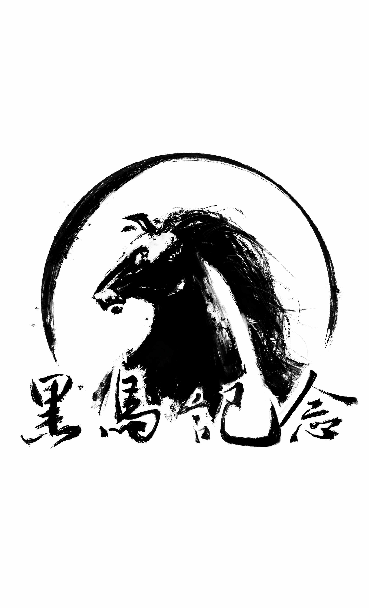

<!doctype html>
<html lang="zh-Hant">
<meta charset="utf-8"><meta name="viewport" content="width=device-width,initial-scale=1">
<title>黑馬記念｜水墨修訂預覽</title>
<style>
:root{color-scheme:dark;--fg:#eeeae3;--muted:#b7cbd0;--red:#d18d90;--line:#566063}
*{box-sizing:border-box}html{background:#242728;scroll-behavior:smooth}body{margin:0;color:#eeeae3;font:15px/1.5 -apple-system,BlinkMacSystemFont,"PingFang TC","Noto Sans TC",sans-serif;font-weight:400}::selection{background:#864b51;color:#fff}a,button,input{font:inherit}a{color:inherit;text-decoration:none}a:focus-visible,input:focus-visible{outline:2px solid #d18d90;outline-offset:3px}svg{width:21px;height:21px;fill:none;stroke:currentColor;stroke-width:1.5;stroke-linecap:round;stroke-linejoin:round;flex-shrink:0}
.page{max-width:430px;margin:auto;min-height:100vh;background:#242728 url('ink-wash-v2.png') center top/100% 100% no-repeat}.brand{text-align:center;padding-top:2px}.mark-window{position:relative;width:240px;height:212px;margin:0 auto;overflow:hidden}.original-mark{position:absolute;width:240px;height:auto;left:0;top:-88px;filter:invert(1) sepia(.12) brightness(.94);mix-blend-mode:screen}.event-name{font-size:16px;font-weight:500;letter-spacing:.12em;color:#c5d2d4;margin:-1px 0 18px}.content{padding:0 18px}.search{height:46px;display:flex;align-items:center;gap:10px;padding:0 14px;border:1px solid #667174;border-radius:12px;background:#303637de}.search input{width:100%;min-width:0;background:transparent;color:#eeeae3;border:0;outline:0;font-size:16px;caret-color:#d18d90}.search input::placeholder{color:#c3cecf}.rounds{display:flex;border-bottom:1px solid #566063;margin-top:14px;margin-bottom:19px}.rounds a{flex:1;position:relative;text-align:center;padding:9px 0 12px;min-height:44px;font-size:16px;color:#c6cfd0}.rounds a[aria-current]{color:#eeeae3;font-weight:600}.rounds a[aria-current]:after{content:"";height:3px;background:#d18d90;position:absolute;bottom:-1px;left:27%;right:27%;border-radius:3px}h2{font-size:17px;line-height:1.5;font-weight:600;margin:0 0 10px}section{scroll-margin-top:12px}.personal{background:#343c3de8;border-radius:14px;display:grid;grid-template-columns:1fr 1.1fr 1fr;padding:18px 13px;text-align:center;align-items:center}.player strong{font-size:26px;font-weight:600;display:block;line-height:1.4}.player span{display:block;font-size:12px;color:#b7cbd0;margin-top:2px}.score{font-size:28px;line-height:1.2;font-weight:500;white-space:nowrap;font-variant-numeric:tabular-nums}.score small{display:block;font-size:12px;font-weight:400;margin-top:10px;color:#b7cbd0}.matches{margin-top:21px}.match{padding:8px 0;display:grid;grid-template-columns:1fr 58px 1fr 72px;gap:8px;align-items:center;min-height:43px;border-bottom:1px solid #566063;font-size:15px}.match>span:nth-child(2){text-align:center;font-size:18px;font-weight:500;font-variant-numeric:tabular-nums}.match>span:nth-child(3){text-align:center}.match small{text-align:right;color:#b7cbd0;font-size:11px}.ranking{margin-top:22px}.ranking-heading{display:flex;align-items:baseline;justify-content:space-between}.ranking-heading span{font-size:12px;color:#b7cbd0}.rank{display:grid;grid-template-columns:28px 1fr 40px;gap:10px;align-items:center;min-height:36px;border-bottom:1px solid #566063}.rank em{color:#b7cbd0;font-size:16px;font-style:normal}.rank b{font-weight:500;text-align:right;font-size:18px;font-variant-numeric:tabular-nums}.note{text-align:center;color:#bacbd0;font-size:11px;margin:20px 0 12px}.bottom{display:flex;border-top:1px solid #626b6d;padding:10px 8px 8px;background:#242728c9}.bottom a{display:flex;flex:1;gap:4px;align-items:center;justify-content:center;flex-direction:column;position:relative;min-height:49px;font-size:12px;color:#d0d8d7}.bottom svg{width:21px;height:21px}.bottom a[aria-current]{color:#d18d90}.bottom a[aria-current]:after{content:"";width:30px;height:2px;border-radius:3px;background:#d18d90;margin-top:2px}.bottom a:hover{color:#eeeae3}
@media(min-width:700px){body{padding:30px 0}.page{box-shadow:0 10px 48px #1118}}
@media(prefers-reduced-motion:reduce){html{scroll-behavior:auto}}
</style>
<main class="page">
 <header class="brand">
  <div class="mark-window"></div>
  <h1 class="event-name">積分賽第一場</h1>
 </header>
 <div class="content">
  <label class="search"><svg viewBox="0 0 24 24" aria-hidden="true"><circle cx="10" cy="10" r="7"/><path d="m15 15 6 6"/></svg><input aria-label="搜尋打師名" placeholder="搜尋打師名"></label>
  <nav class="rounds" aria-label="輪次"><a href="#matches">第1輪</a><a href="#personal" aria-current="page">第2輪</a><a href="#matches">第3輪</a></nav>
  <section id="personal" aria-label="你的對戰"><h2>你的對戰</h2>
   <div class="personal"><div class="player"><strong>青焰</strong><span>先攻</span></div><div class="score">— : —<small>等待比分</small></div><div class="player"><strong>夜凪</strong><span>後攻</span></div></div>
  </section>
  <section id="matches" class="matches"><h2>本輪對戰</h2>
   <div class="match"><span>星河</span><span>2 : 1</span><span>墨白</span><small>已完成</small></div>
   <div class="match"><span>晨嶼</span><span>— : —</span><span>孤影</span><small>等待比分</small></div>
   <div class="match"><span>流光</span><span>1 : 2</span><span>白夜</span><small>已完成</small></div>
  </section>
  <section id="ranking" class="ranking"><div class="ranking-heading"><h2>即時排名</h2><span>勝場</span></div>
   <div class="rank"><em>1</em><span>星河</span><b>2</b></div><div class="rank"><em>2</em><span>白夜</span><b>2</b></div><div class="rank"><em>3</em><span>青焰</span><b>1</b></div>
  </section>
  <p class="note">概念示意・非實際賽況</p>
 </div>
 <nav class="bottom" aria-label="公開頁面"><a href="#personal" aria-current="page"><svg viewBox="0 0 24 24" aria-hidden="true"><path d="M8 3h8v6a4 4 0 0 1-8 0V3ZM8 5H4v2a4 4 0 0 0 4 4m8-6h4v2a4 4 0 0 1-4 4m-4 2v5m-4 3h8m-7-3h6v3"/></svg>賽況</a><a href="#ranking"><svg viewBox="0 0 24 24" aria-hidden="true"><path d="M3 12h5v9H3zm6-8h6v17H9zm7 12h5v5h-5"/></svg>排名</a><a href="#matches"><svg viewBox="0 0 24 24" aria-hidden="true"><path d="m3 8 9-5 9 5-9 5-9-5Zm0 5 9 5 9-5M3 18l9 5 9-5"/></svg>系列</a></nav>
</main>
</html>
